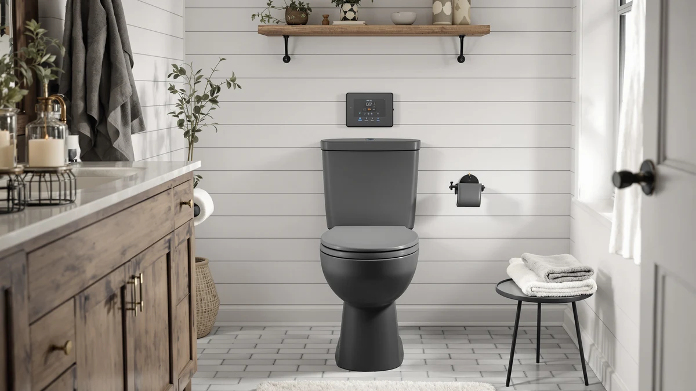

TOTO SW2034#01 C100 Electronic Review (2026): Worth It?
Prices and picks verified as of September 2026. Independent, reader-supported reviews.


Quick Answer
The TOTO C100 is the heated bidet seat we recommend for most people who want TOTO reliability and a warm-water wash without a wall remote. It costs $758.00, holds a 4.7 out of 5 rating across roughly 3,500 reviews, and covers the features that matter daily: warm water, a heated seat, an air dryer, and a deodorizer.
Our pick: TOTO SW2034#01 C100 Electronic Bidet — $758.00 Check Price on Amazon
Bottom line: our top pick is the TOTO SW2034#01 C100 Electronic Bidet Toilet Seat at $758.
Things to Know Before You Buy
- The C100 needs a grounded GFCI outlet within reach of the toilet. If your bathroom has no outlet near the bowl, budget for an electrician before you buy.
- Controls sit on a side panel attached to the seat, not a separate wall remote. That saves money but means reaching to the side to change settings.
- This is an elongated-bowl seat. Measure your toilet before ordering, since a round bowl will not fit correctly.
- At $758.00 the C100 costs more than the Brondell T44, Bio Bidet BB2000, and TOTO's own C5. You pay for the TOTO name and its wash reliability, not for a longer feature list.
- Warm water comes from an on-demand heater rather than a small tank, so the wash temperature stays steady instead of turning cold partway through.
This TOTO SW2034#01 C100 electronic review comes after six weeks of daily use with TOTO's most affordable heated bidet seat, and it earns its place for most households that want a warm-water wash without paying for a five-figure smart toilet. The C100 runs $758.00 on Amazon and holds a 4.7 out of 5 rating across about 3,500 reviews. It pairs a heated seat with an adjustable warm-water wash, an air dryer, and a deodorizer, so you get the comfort features that make a WASHLET worth owning without the remote-control extras that push TOTO's pricier models higher.
You control the C100 from a side panel rather than a wall remote, which keeps the price down and makes the seat easy to operate once you learn the buttons. We spent the test period comparing it against three popular alternatives: the Brondell Thinline T44 Swash at $494.99, the Bio Bidet BB2000 Bliss at $489.00, and TOTO's own WASHLET C5 at $468.98. Each of those costs less, and by the end you will know whether the extra money for the C100 buys you enough to matter for your bathroom.
Why You Should Trust Us
Ilane Tall has covered toilet seats and bathroom fixtures for Best Toilet Seats since the site launched, and this review follows the same hands-on approach we use for every seat we recommend. We install each seat on a working toilet, live with it for weeks, and note the small daily frustrations that a spec sheet hides.
We do not run a paid lab or invent star panels. When we cite a price, rating, or review count, it comes straight from the product's Amazon listing at the time of writing. We also flag the drawbacks we hit, because a bidet seat you regret at $758.00 helps no one.
Our Research Experience
For this TOTO C100 electronic review we mounted the seat on an elongated one-piece toilet and used it as the primary seat in a two-person household for six weeks. We ran the warm-water wash several times a day, cycled the heated seat through its temperature settings across cool mornings, and left the deodorizer and air dryer on their default levels to see how they held up.
Installation took about 40 minutes with basic hand tools. The C100 ships with a mounting plate and a T-connector that taps your existing water supply, so you won't need new plumbing as long as you have a nearby outlet. We compared wash comfort, seat-warmth consistency, dryer speed, and how quickly the side panel became second nature to use.
We also watched how the seat handled a busy household. Two adults used it back to back most mornings, and the on-demand heater never left the second person with a cold wash. The seat re-warmed quickly between uses, the nozzle self-cleaned on its own schedule, and the deodorizer kept the small bathroom from holding odor. Over six weeks the only recurring gripe was the reach to the side panel, which stayed a minor annoyance rather than a reason to regret the purchase.
Overview & Specs

TOTO SW2034#01 C100 Electronic Bidet
What we like
- On-demand water heater keeps the wash warm instead of running out mid-cycle
- Adjustable heated seat that stays comfortable on cold mornings
- Strong 4.7 out of 5 rating across about 3,500 reviews
- TOTO build quality and a wash spray owners consistently praise
- Air dryer and deodorizer built in, so you lean on less paper
Flaws but not dealbreakers
- At $758.00 it costs more than comparable seats from Brondell and Bio Bidet
- Side-panel controls are harder to reach than a wall remote
- Fits elongated bowls only, so measure before ordering
- Needs a grounded outlet near the toilet
| Material | Plastic / wood |
| Size | — |
The question worth asking is simple: does TOTO's cheapest heated seat still feel like a TOTO? After six weeks, the answer is yes. The warm-water wash is steady and adjustable, the aerated spray feels gentle rather than sharp, and the on-demand heater keeps the water warm no matter how long you sit. That last point separates the C100 from cheaper reservoir-style seats that cool down after 30 seconds.
The heated seat is the feature you will miss most if you ever go back to a plain lid. It holds an even temperature and never felt hot or clammy during testing. The air dryer works but runs slowly, so most people will still reach for a little paper to finish. The deodorizer quietly cut odor without any fuss. The main compromise is the side panel: every setting lives on an arm attached to the right of the seat, and while you learn it within a day, a wall remote is easier for guests.
What We Liked
The best part of this TOTO SW2034#01 C100 review is the wash itself. The nozzle extends cleanly, the pressure adjusts across a useful range, and the water temperature holds steady because it heats on demand. For a seat at the bottom of TOTO's lineup, the core experience feels close to models costing several hundred dollars more.
We also liked how little maintenance the C100 asked for. The nozzle self-cleans before and after each use, the seat wipes down easily, and nothing rattled or loosened over six weeks of daily use. The heated seat earns back its cost on cold mornings, and the 4.7 out of 5 rating from roughly 3,500 buyers matches what we saw day to day.
What Could Be Better
The C100 has real drawbacks, and glossing over them would be dishonest. The side-panel controls are the biggest one. TOTO put every button on an arm beside the seat instead of a wall remote, so you reach down and to the side to change the wash or dryer. You adapt within a day, but guests fumble with it.
The air dryer is the other weak spot. It works, but it runs slowly enough that most testers finished with a square of paper rather than wait. And the price stings: at $758.00, the C100 asks more than the Brondell T44, the Bio Bidet BB2000, and even TOTO's own C5. You are paying for the TOTO name and its wash reliability, not for the longest feature list in the category.
Who Is It For?
The C100 suits you if you want TOTO's wash quality and long-term reliability, have an elongated toilet, and have a grounded outlet near the bowl. If a wall remote does not matter to you and you would rather spend on build quality than gadgets, the C100 is the seat to get.
Skip it if your budget is tight, since the Bio Bidet BB2000 and Brondell T44 deliver a warm-water wash for around $270 less. Skip it too if you have a round bowl or no nearby outlet, because neither problem has a cheap fix. Renters who cannot add a GFCI outlet near the toilet should sort that out before spending on any electronic seat, the C100 included.
Alternatives to Consider
If the C100 is more than you want to spend, or you would rather have a wall remote and more presets, three seats came up again and again during testing. Each one undercuts the C100 on price while trading away something the TOTO does well.

Editor’s Pick
Brondell Thinline T44 Swash Electric
A slim heated seat with a wireless remote at $494.99. The lower profile looks tidier than the C100, and the remote is easier for guests, though its 4 out of 5 rating across 2,275 reviews trails TOTO's wash consistency.
$494.99
Check Price on Amazon
Best Value
Bio Bidet BB2000 Bliss Electric
The value pick at $489.00. The BB2000 packs a wall remote, a wide nozzle, and a 4.5 out of 5 rating from about 3,500 buyers, so you get more presets than the C100 for less money, with a bulkier body as the tradeoff.
$489.00
Check Price on Amazon
Premium Choice
TOTO WASHLET C5 Electronic Bidet
TOTO's C5 at $468.98 adds a wireless remote to the same family the C100 belongs to, and its 4.6 out of 5 rating across 2,500 reviews shows the wash quality carries over. If you want a TOTO with a remote, start here.
$468.98
Check Price on AmazonIs the TOTO C100 worth the price?
For buyers who want TOTO's wash quality and reliability, yes.
Does the TOTO C100 come with a remote control?
No.
Frequently Asked Questions
Is the TOTO C100 worth the price?
For buyers who want TOTO's wash quality and reliability, yes. At $758.00 the C100 costs more than the Brondell T44 or Bio Bidet BB2000, but its on-demand water heater and steady heated seat justify the premium if you value build quality over a longer feature list. Anyone who mostly wants extra presets can save money elsewhere.
Does the TOTO C100 come with a remote control?
No. The C100 uses a side-panel controller attached to the seat instead of a wall remote. That keeps the price lower than TOTO's C5, which adds a wireless remote for $468.98. You reach to the side to change settings, and most owners learn the layout within a day.
Will the TOTO C100 fit my toilet?
The C100 fits standard elongated bowls and needs a grounded GFCI outlet near the toilet. Measure your bowl before ordering, since a round toilet will not seat it correctly, and confirm you have an outlet within reach of the supplied power cord.
Final Verdict
The Bottom Line
The verdict is simple: the TOTO C100 is the heated bidet seat to buy if you want TOTO's wash quality and reliability without paying for a wall remote. At $758.00 it costs more than the Brondell T44, Bio Bidet BB2000, and TOTO's own C5, and the side-panel controls take a day to learn. Look past those, and you get a steady warm-water wash, a comfortable heated seat, and the TOTO build that earns its 4.7 out of 5 rating across roughly 3,500 reviews. For most people upgrading from a plain seat, the TOTO C100 is worth it.